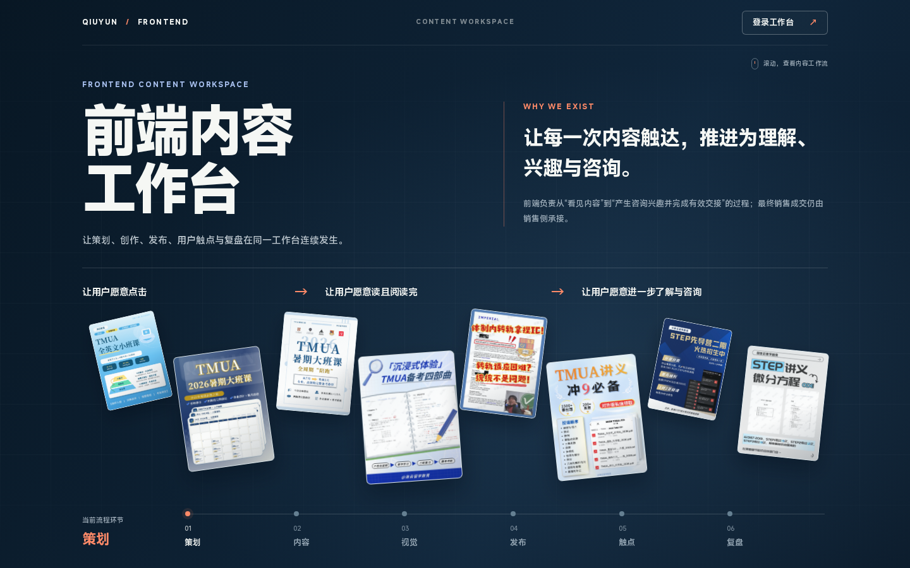

A推荐 · 表达与秩序的平衡

打开完整动效 ↗封面归位
从内容的丰富，走向工作的秩序。
- 动效
- 错位封面 → 单向归位 → 平稳交接
- 布局
- 两段分栏 · 六阶段 3×2 · 三条入口
保留真实封面的个性，首屏有记忆点，后文顺着同一条阅读轴展开。
页面高度2608 px
后两区缩短54%
首页视觉与动效提案
三个完整方向，同一份真实内容。
比较首屏的新鲜感、跨屏连续性，以及抵达工作台的距离。
我的建议
A 把现有首页的真实内容特色保留下来，再用一次有终点的归位建立秩序，是最平衡的方向。C 让你判断：首屏的展示感，是否值得多一些滚动距离。
B 则适合希望保持原有流程结构，并让整个首页更安静、更偏工具属性的选择。
形态连续的滚动交接 ↗参考同一对象收拢后接入正文的关系。
明确主角与稳定网格 ↗参考画面秩序，沿用本项目的颜色与真实素材。
查看验收索引 ↗1440 / 1280 / 1024px、往返滚动、减少动态效果与异常素材。